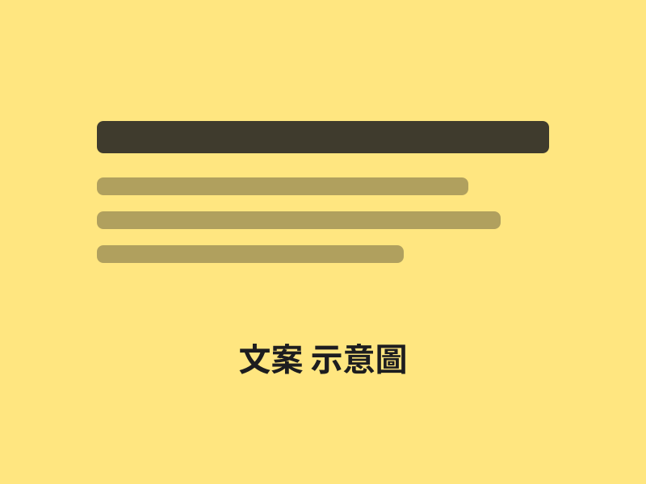

桂花開了，咖啡也是。🌼
10/1 起，桂花拿鐵準時報到。
先猜猜，第一杯你會留給誰？

文案
品牌社群文案系列（示範）
用 AI 發想 30 組貼文方向，再人工挑選、改寫成符合品牌語氣的成品。
工具：ChatGPT、Claude
目標：為一間社區咖啡店撰寫輕鬆、有生活感的社群貼文。
AI 原稿
歡迎來到我們的咖啡店！我們提供高品質的咖啡，使用新鮮的豆子，讓您享受美好的一天。快來品嚐吧！
人工修改後
早上的第一口，不用將就 ☕
每週三現磨的豆子，剛好趕在你上班前。
我做了哪些判斷與修改
- 刪掉「高品質」「美好」這類空泛形容詞，換成具體的時間與場景。
- 把客套語氣改成品牌的輕鬆口吻，不說教、不喊口號。
- 壓縮到 40 字內，符合社群貼文的閱讀習慣。
成果
（示範）從 30 組 AI 方向中挑出 6 組，改寫後交付，可直接排程發佈。